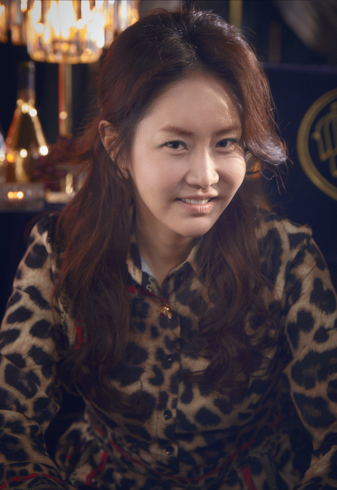

심수련
이지아
“죄를 짓고 아무 일 없다는 듯이 살면 안되는 거잖아”
주단태의 아내. 주석훈과 주석경 쌍둥이의 엄마.
헤라팰리스 입주자 모두 인정하는,
명실상부한 헤라클럽의 퀸!
그런 그녀에게 완벽과 최고만을 추구하는 주단태와의 결혼생활은
숨 막힐 것 같은 답답함의 연속이었다.
그를 진심으로 사랑하지 않았지만 두 아이를 위해
아내와 엄마의 역할을 다하고자 애썼다.
본인의 행복을 포기한 채 펜트하우스에서 무미건조한 삶을 살아 온지 꽤 오래됐다.
-
이름
심수련
-
출생
1977년 5월 22일(46세)
-
거주지
서울특별시 강남구 영동대로 512 헤라팰리스 100층 펜트하우스
-
직업
화가 → JAKOMO 대표
오윤희
유진
“엄마 심장 반쪽을 팔아서라도 여기서 살게 해줄게”
배로나 엄마. 자격증 없는 부동산 컨설턴트.
“내 딸만큼은 돈 때문에 설움 받지 않아야 하고,
차별당하지 않아야 하고, 기죽어선 안 된다!
그러려면, 돈이 있어야 한다."
학창시절 전국에서 알아주는 실력파 소프라노였으나
예상치 못한 사고로 성대에 치명적인 손상을 입어 성악을 포기했다.
윤희의 삶이 꼬이기 시작한 것은 그때부터였다.
딸 만큼은 돈에 허덕이며 살게 하진 않겠다는 마음으로 억척스럽게 살았다.
윤희에게 로나는 삶의 모든 것이자 이유였다.
가진 게 없어도 로나에겐 모든 걸 해주고 싶었다.
-
이름
오윤희
-
출생
1978년 5월 7일(45세)
-
거주지
서울특별시 용산구 후암동 다세대주택 2층
→ 서울특별시 성동구 성수동 보송마을 아파트 3동 501호
→ 서울특별시 강남구 영동대로 512 헤라팰리스 4502호[3]
-
직업
소프라노 성악가 → 부동산 컨설턴트 → JKING홀딩스 투자개발팀장 → 전업주부
천서진
김소연
“세상은 힘있는 사람의 얘기만 들어줘”
하윤철의 부인. 하은별의 엄마.
타고난 금수저. 청아재단 실세. 유명 소프라노.
“헤라클럽”의 여왕벌
자신이 세상의 중심이어야 하는 여자. 원하는 것은 어떻게든 손에 넣는다.
그것이 다른 사람의 꿈이든, 다른 여자의 남자든.
스포트라이트는 항상 서진을 비추고 있었다.
‘한국 최고의 소프라노’, ‘청아재단 이사장 딸’, ‘넘사벽 엄친아’라는
타이틀은 늘 그녀를 주목받게 만들기 충분했다.
남편인 윤철 또한 집안은 형편없었지만 차기 병원장을 노릴만큼 성실한 사람이었다.
그를 VIP 전담 외과 과장 자리에 앉히기 위해 서진도 나름의 내조를 했다.
모든 게 자리를 잘 잡고 있는 듯 보였다.
-
이름
천서진
-
출생
1978년 3월 28일(45세)
-
거주지
서울특별시 강남구 영동대로 512 헤라팰리스 8501호
-
직업
청아예술고등학교 예술부장 → 청아그룹 이사장
주단태
엄기준
“가엾지 뭐야. 아무것도 몰랐다면 죽지 않았을 텐데”
심수련의 남편. 주석훈, 주석경의 아빠.
제이킹 홀딩스 건축회사 대표. 부동산의 귀재.
서울, 북경, 라스베거스, 인도네시아, 전 세계 곳곳에 그의 건축물이 있다.
삼성동 최고층 주상복합 건물 헤라팰리스도 그의 작품!
건축 뿐 아니라 부동산에도 천부적인 재능을 가진 그는
귀신같이 돈 냄새를 잘 맡아, 투자하는 부동산마다 돈을 쓸어 모았다.
강남 노른자위 땅과 고층 건물 여럿을 소유하고 있다.
자수성가한 인물인 만큼 강박증 심한 완벽주의자적 기질을 갖고 있다.
한 치의 흐트러짐이나 구설도 용납하지 않는다. 늘 최고여야 하고, 완벽해야 한다.
냉혈한의 피가 흘러 가족들을 거칠게 대하지만
남들에겐 완벽한 가정으로 보이고자 부단히 노력한다.
-
이름
주단태
-
출생
1976년 8월 13일(47세)
-
거주지
서울특별시 강남구 영동대로 512 헤라팰리스 100층 펜트하우스
-
직업
제이킹 홀딩스 건축회사 대표
하윤철
윤종훈
“후회는 늘 있는 거니까. 산다는게, 자신이 선택하지 않은 걸 감당하는 거라며”
천서진의 남편. 하은별의 아빠.
대형 종합병원 청아의료원 VIP 전담 외과과장.
허리 디스크수술의 권위자.
현실에 적당히 타협할 줄 아는 인물로
사람을 계급에 따라 나누어 대하는 처세술의 끝판왕.
역시 남자는 돈과 권력을 쥐고 있어야 한다는 야망남.
국내 수술 예약환자수 최다, 청아의료원
수익률200%를 일궈낸 장본인으로 유력한 차기 청아의료원 병원장이다.
윤철도 본인의 성공에는 부인 천서진의 내조가 한 몫 했다 생각한다.
인생의 파트너로서 만족스러운 아내였다.
특히 두 사람의 목표가 같았다. ‘최고가 되는 것! ’
-
이름
하윤철
-
출생
1978년 2월 3일(45세)
-
거주지
서울특별시 강남구 영동대로 512 헤라팰리스 8501호
-
직업
청아의료원 VIP 전담 신경외과장
이규진
봉태규
“하늘도 결국, 우리 부자 편 아니겠어요?”
고상아의 남편. 이민혁의 아빠. 빅토리 로펌 전문 이혼변호사.
법조인 재벌가의 외아들로 허세뿐인 속빈 강정에 마마보이. 찌질의 끝판왕.
법조계 집안의 3대 독자로 1남 2녀 중 막내다.
어렸을 때부터 엄마가 시키는 대로 살아왔더니
어느 새 변호사가 되어 있었다.
당연히 스스로 할줄아는 건 없고,결정장애에
모든 걸 누나나 엄마에게 컨펌 받아야 마음이 편한 마마보이다.
게다가 생활비 대신 엄카를 건네는 찌질의 끝판왕.
규진은 상아가 매일같이 엄마에게 볶여도 방패막이가 돼 줄 생각이 없다.
손도 까딱 앉는 버릇으로 하나부터 열까지 상아에게 다 시키고,
상아가 조금이라도 반기를 들면 쪼르르 누나나 엄마에게 얘기하느라 바쁘다.
-
이름
이규진
-
출생
1978년 10월 19일(45세)
-
거주지
서울특별시 강남구 영동대로 512 헤라팰리스 55층
-
직업
빅토리 로펌 이혼 전문 변호사
고상아
윤주희
“이제 자기도 스스로 하는 모습을 보여야지”
이규진의 아내. 이민혁의 엄마.
아나운서 출신의 재벌가 며느리.
남편과 아들 일이라면 어떤 희생이라도 감수하는 소문난 내조의 여왕
교양 있는 척, 세상 행복한 척, 사랑받는 척 하지만,
정작 반쪽짜리 결혼생활이다. 한때 촉망받던 아나운서에서
지금은 재벌가 며느리로, 남편 이규진을 내조하며 살아가고 있다.
그녀의 결혼생활을 한마디로 창살 없는 감옥이었다.
시댁식구들은 온갖 더럽고 구린 짓은 다하고
호사를 누리면서, 상아에게는 검소, 절제, 청렴을 강요한다.
시어머니의 컨펌 없인 콩나물 100g도 살 수 없었다.
남편의 월급을 단 한 번도 만져본 적 없었다.
-
이름
고상아
-
출생
1979년생(44세)
-
거주지
서울특별시 강남구 영동대로 512 헤라팰리스 55층
-
직업
SBC 아나운서 → 전업주부
강마리
신은경
“죄를 짓고 아무 일 없다는 듯이 살면 안되는 거잖아”
유제니의 엄마. 유동필 부인.
개처럼 벌어서 정승처럼 쓰자는 게 인생모토. 졸부.
헤라팰리스에 거주하지만, 20년 경력의 손맛 좋은 세신사
개처럼 벌어서 정승처럼 쓰자는 게 인생모토.
다혈질인 듯 보이지만 사실 알고 보면
엄청나게 계산적이고 냉철하다.
예약이 줄을 서는 경력 20년의 세신사와,
헤라 팰리스 졸부의 이중생활을 하고 있다.
딸(유제니)의 일이라면 도둑질이라도
저지를 수 있는 여자다.
제니는 나의 유일한 피붙이이자 공주니까.금쪽같은 내 새끼.
-
이름
강마리
-
출생
1976년 1월 30일(47세)
-
거주지
서울특별시 강남구 삼정동 영동대로 512 헤라팰리스 4503호
-
직업
세신사

Character
버튼을 클릭해보세요